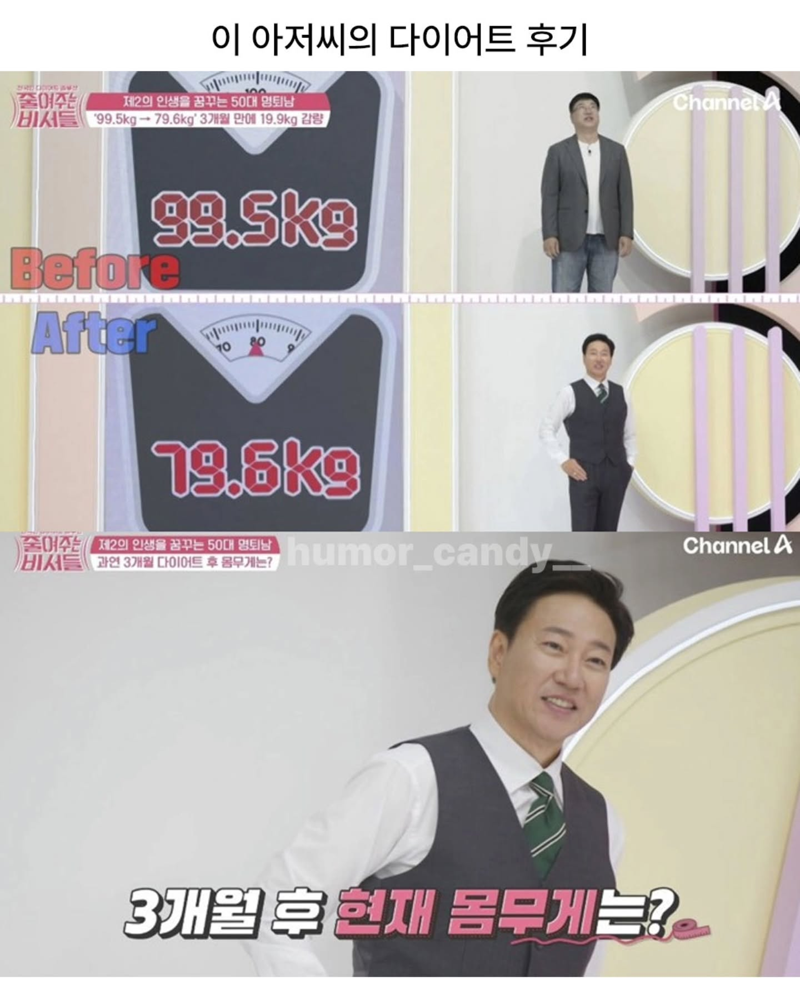

 뭐 잘생기고 예쁜건 3년 간다고? 그건 너가 존잘 존예를 못만나봐서 그래.... 잘생기고 예쁜건 평생감 잘생긴 사람들이 늙어서도 잘생김 젊어서 못생기면 늙어서도 똑같이 못생김
댓글
수집 당시 댓글 22개
잇츠릿 · 3 일 전
머리숱도 한몫함ㅋㅋㅋ
긍정왕오키도킹 · 3 일 전
예쁘고 잘생긴건 자식한테도 감 ㅋㅋㅋ
냄비뚜껑 · 3 일 전
이게 존나사기인게 못생긴애가 바닥에서 땡깡부리면서 기어다니면 눈쌀 찌푸리고가는데 이쁜애가 그러고있으면 함박웃음나옴 ㅋㅋ
짖잘드럭ㅇ강나쇼 · 3 일 전
잘생기고 예뻐봐야 3년간다고? 못생긴 건 평생 가
도쿄피에스타 · 3 일 전
옛날에는 다들 고생해서 3년이 틀린말은 아닌데 요즘은 최소 10-20년은 가는것 같더라 ㅜㅜ
키움히어로즈 · 3 일 전
아니야 자손대대로감
0w0 · 3 일 전
살 뺐다고 얼굴이 달라지시네
마키마의반죽교실 · 3 일 전
덱스 + 송일국
시라누이Q · 3 일 전
와 잘생기셨네 ㅋㅋㅋㅋ
삼성전자곱버스 · 3 일 전
살빼니까 웃을때 눈매가 박해일 느낌 난다
미녀와야스 · 3 일 전
잘생긴사람은 살쪄서 좀 못나져도 그 당당함과 여유로움이 느껴짐 ㅋㅋ
충남대물리학과2 · 3 일 전
죽을게
edadfqfq · 3 일 전
와 나 이거 후기는 처음본다 다이어트 하니까 겁나 잘생기셨네
그레이트닭 · 3 일 전
젊으실때 분노의질주인가? 거기 성강인가 하는배우 느낌있으시네
유메노아이카찹살젖통 · 3 일 전
와 다이어트가 최고의 성형이다
혜리가이쁘다 · 3 일 전
3개월 20kg 개쩔긴하네 ㅋㅋㅋㅋ
나의어머니 · 3 일 전
갑자기 아나운서가 되셧네 ㅋㅋ
사랑해요고양이 · 3 일 전
얼굴도 얼굴인데 남자 와꾸는 머리숱이 80은 먹고들어간다고 본다
노미닝 · 3 일 전
전대물 배우 느낌 난다
개드립콘쓰려고가입 · 3 일 전
못생긴놈은 늙어서 더못생김
어린왕자지드래곤 · 3 일 전
가만히 있는데 왜 때림
개드립콘쓰려고가입 · 3 일 전